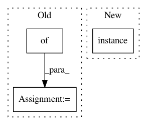

b523b464d8cafe29e352981c1c6df941f205592a,nilmtk/metrics.py,,mean_normalized_error_power,#Any#Any#,109
Before Change
"""
mne = {}
numerator = {}
denominator = {}
for appliance in predicted_power:
numerator[appliance] = np.sum(np.abs(predicted_power[appliance] -
After Change
total_diff += sum(abs(diff))
sum_of_ground_truth_power += truth_chunk.icol(0).dropna().sum()
mne[meter.instance()] = total_diff / sum_of_ground_truth_power
return pd.Series(mne)
In pattern: SUPERPATTERN
Frequency: 3
Non-data size: 3
Instances
Project Name: nilmtk/nilmtk
Commit Name: b523b464d8cafe29e352981c1c6df941f205592a
Time: 2014-07-09
Author: jack-list@xlk.org.uk
File Name: nilmtk/metrics.py
Class Name:
Method Name: mean_normalized_error_power
Project Name: nilmtk/nilmtk
Commit Name: 1305be0d02296ddbf12a67b9ba4b542587e285de
Time: 2014-11-16
Author: jack-list@xlk.org.uk
File Name: nilmtk/disaggregate/combinatorial_optimisation.py
Class Name: CombinatorialOptimisation
Method Name: disaggregate
Project Name: nilmtk/nilmtk
Commit Name: 7d5c595768fb372606290277996ec63c5489aa11
Time: 2014-12-19
Author: jack-list@xlk.org.uk
File Name: nilmtk/metergroup.py
Class Name: MeterGroup
Method Name: draw_wiring_graph